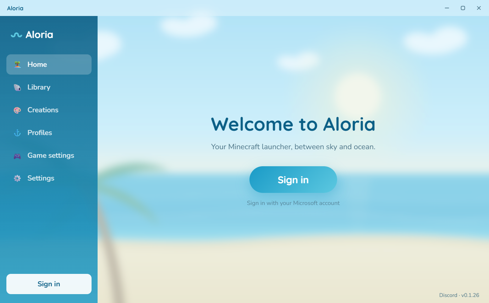
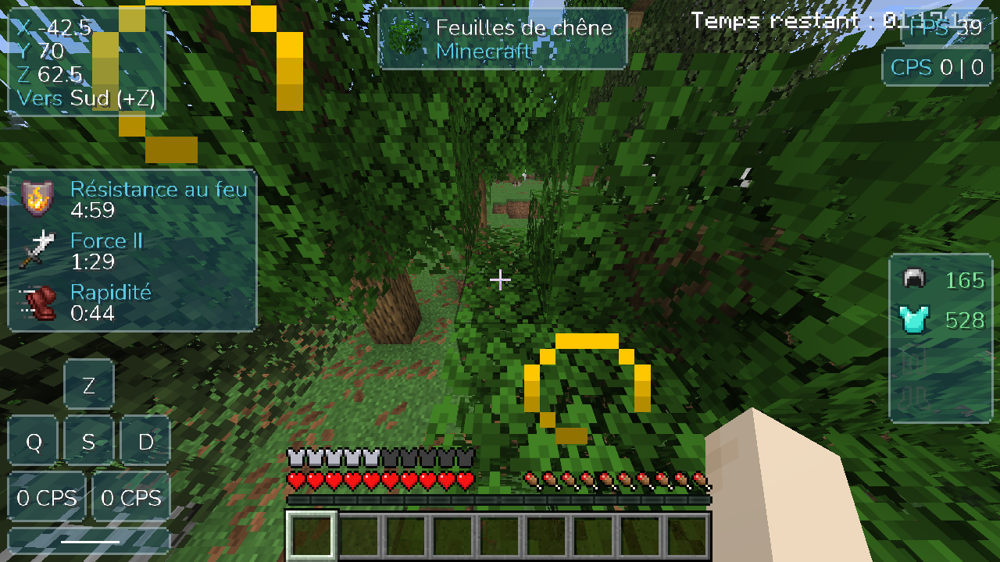

Microsoft sign-in
Official, secure sign-in with multiple accounts. Your credentials stay encrypted on your PC.
Your Minecraft launcher, between sky and ocean.
Download for WindowsAll systems: Windows · Linux (AppImage) · Linux (.deb)
You need a Microsoft account that owns Minecraft: Java Edition.

A light, good-looking launcher, made so you have nothing to set up.
Official, secure sign-in with multiple accounts. Your credentials stay encrypted on your PC.
One version, one folder and its own amount of RAM per profile, from 1.8 to the latest releases, with the mod loader of your choice in one click.
Built-in Modrinth library: search, install and automatic dependencies. You can also drop in your own files.
Install a Modrinth modpack in one click, seeing its mods first. Export a profile as a .zip for your friends, or import Prism Launcher and MultiMC ones.
Create your own pack for the game HUD (crosshair, hotbar, hearts, XP bar…) right in the launcher, no drawing app needed.
Controls, sound, field of view and accessibility options set once, applied to all your profiles.
Your server list follows you from one profile to another, and your Discord status shows what you're playing.
Java is installed automatically, and the launcher updates itself in the background.
A customizable HUD, added automatically to your Fabric profiles: 1.8.9, and 1.20.1 to 26.3. In English or French, following the game's language.

Click Download for Windows and open the Aloria-Setup.exe file.
The installer isn't signed (a certificate is expensive). If Windows SmartScreen shows up, click More info then Run anyway.
Sign in with your Microsoft account, create a profile and start the game. Minecraft downloads by itself.
Yes, completely. You only need to own Minecraft: Java Edition on your Microsoft account.
No. Aloria has no "cracked" mode: it checks that your account owns the game, just like the official launcher.
Sign-in goes through Microsoft's official page: Aloria never sees your password. Sign-in tokens are encrypted on your PC and only sent to Microsoft, Xbox Live and Mojang. The code is public on GitHub.
Because the installer isn't signed with a paid certificate. That's normal for a small project: click "More info" then "Run anyway".
That's Windows 11 Smart App Control (Windows Security → App & browser control): when it's on, it refuses every unsigned program, with no exception. It's mostly on for PCs where Windows was just installed. You can turn it off there, but it's a Windows protection: only do it if you trust the program (the Aloria code is public), and know that once it's off, Windows doesn't always let you turn it back on without reinstalling. Once Aloria is installed, its updates go through without being blocked.
Yes: Library → Modpacks tab. Aloria installs Fabric, Forge and NeoForge modpacks from Modrinth and shows their mods before installing. A few modpacks ask you to download some mods by hand from CurseForge: Aloria tells you so and doesn't install them, because they would crash without those mods.
Two options, for every Ubuntu or Debian based distribution (Zorin OS, Linux Mint, Pop!_OS…):
chmod +x Aloria.AppImage) then double-click it. If it doesn't open,
install FUSE once: sudo apt install libfuse2. It also works on other distributions.sudo apt install ./Aloria.deb.For 1.8.9, the game needs xrandr (x11-xserver-utils package, already there on most desktops).
Not for now: Aloria is available for Windows and Linux.
No, your worlds, profiles and accounts are kept in %APPDATA%\.aloria on Windows,
and in ~/.config/.aloria on Linux.
The Aloria installer isn't signed yet (a code signing certificate is expensive for a free project). Instead, everything is transparent: the Windows and Linux installers are built automatically by GitHub Actions from the public source code (MIT license), and every update is checked by its fingerprint (SHA-512) before being installed.
Privacy: Aloria collects no data and only contacts the services the game needs (Microsoft, Mojang, Modrinth, Fabric, Forge, NeoForge, GitHub, Discord). Details in the privacy policy. This program will not transfer any information to other networked systems unless specifically requested by the user or the person installing or operating it, except for the automatic update check.